英文
英文麦克斯韦
编者按
在这篇文章中，克拉克·麦克斯韦介绍了从基本原理（现在的名字是统计力学）出发研究气体和液体性质的最新进展。此前，麦克斯韦提出了他的气体动力学理论，这是他作出的决定性的贡献。在本文中他报道了鲁道夫·克劳修斯等其他研究人员的工作。克劳修斯引入了“位力”这个理论物理量，用来表示所有粒子对的粒子间距离与粒子间引力或斥力乘积的总平均。麦克斯韦在这篇文章中还提到了另外两个人的工作，其中一个是当时还没什么名气的研究生约翰内斯·迪德里克·范德瓦尔斯，另一个是美国物理学家约西亚·威拉德·吉布斯，这两人后来都成了研究物质体系基本行为特征的领袖人物。 英文
I
任何一种现象，一旦可以被视为某种适用于其他现象的普遍原理的实例，我们就可以说这种现象得到了解释。然而，解释包括很多不同层面，要视所采用原理的普适程度而定。因此，第一个观察到将水泼入火中这种现象的人，在发现结果总是相似的而且这些结果并不取决于水和火之间那瞬息万变、反复无常的不相容性时，便会获得一定程度的精神满足。这是一种最低层次的解释，在这种解释中，以上现象所涉及的分类还包含其他现象，而这些现象只是发生的时间和地点不同，所涉及的原理却是非常普适的，因此时间和地点并不属于能够决定自然过程的条件。另一方面，当某一物理现象能够被完全描述为物质系统结构或运动的变化时，我们就可以说这种现象得到了完整的动力学解释。我们想不出还有什么更进一步的解释是必要的、有用的或者可能的，因为一旦我们了解了结构、运动、质量和力这些词的意义，便会发现它们所表示的意义如此基本，以至于无法再用其他概念来解释它们。 英文
化学家们研究的现象，大部分还没有得到完整的动力学解释。 英文
很多化合物分子的图示或模型已经建立。它们都是化学家根据可以说明或解释的化学现象的几何关系努力猜想物质系统的结构而得到的结果。不过，这些图示只不过是对构成分子的不同成分束缚在一起的各种不同的紧密程度的符号表示而已，没有一位化学家敢说他能从中看出更多的东西。 英文
另一方面，在天文学中，天体的结构和运动所具有的尺度是我们可以通过直接观测来确定的。牛顿证明了观测到的运动显示出所有物体之间都有不断彼此靠拢的趋势，他建立的万有引力定律不仅解释了观测到的我们自身所在系统的运动，而且使我们能够计算出具有任意量值的天文学对象所组成的系统的运动情况。 英文
从天文学转向电学，我们仍然可以观测带电体的结构和运动，并遵循严格的牛顿式方法来推导出它们的相互作用力。但是我们发现这种力依赖于所谓的电的分布。因此，建立一种关于电作用不可见过程的、被高斯称为“统一表象”的理论，就成为这门科学的迫切需要。 英文
在试图将动力学方法推广以用于对化学现象的解释时，我们必须形成关于大量物质系统的结构和运动的观念，而其中每一个物质系统都小到无法直接观测的程度。事实上，我们只能通过观测那些看不见的结构部分的外部作用来确定其内部结构。 英文
主要用来进行此类研究的方法是先建立一个假说，然后计算如果该假说成立会产生什么结果。若这些结果与实际现象相吻合，我们就说这个假说得到了确证，至少在没有其他人提出与客观现象更一致的另一种假说之前，是可以这样说的。 英文
之所以有如此多的物理理论依靠假说的方式建立起来，是因为理论家早期没有获得具有足够普适性的方法和术语来表达他们归纳出的结果。受此限制，他们要么将观点表达得含糊不清以至于毫无用处，要么用另一种形式表达观点，而这种形式的细节只能靠非常规的想象力来弥补。 英文
与此同时，数学家在其本能（这种本能使他们将自身才智孕育出的丰硕果实供给他人）的驱使下已经发展出了具有充分普适性的关于物质系统的动力学理论。 英文
在所有关于物体构成的假说中，最可信的无疑是这样一种假说：它除了假定物体构成物质系统之外绝无更多假定，并仅就观测到的现象在合理范围内所提供的有关物质系统的条件和联系等信息进行推导。 英文
在合理地阐明和解释这种物理假说方法的实例之后，我们受到的对科学界人士推理不严谨的抱怨将会变得很少，并且相应的归纳哲学方法也不会再被人嘲笑为凭空臆测了。 英文
迄今为止，物体构成理论中只有一小部分已经通过已知的事实被归纳为精确的结论。要通过合理的实验和严格的论证引导科学活动沿着十分合理的道路前进，就需要一种战略技巧，这种技巧可遇不可求，即使对于那些凭借原始观测与丰富联想进行科学研究的人来说也是一样。下面的事实并不会贬低科学先驱的成就，即他们在未知领域的开拓工作，这些开拓工作曾经一度被隔离于有着已确定的作用基础的交流体系之外，而这个交流体系正是任何科学持续发展的唯一保障。 英文
要研究物体构成，我们从一开始就不得不处理看不见的微粒。因为不管我们对于分子和原子得到的最终结论将是什么，现在我们已经得到了实验上的证据，可以证明物体可以被分割成小到无法察觉的部分。 英文
由此，如果我们细心地注意到微粒这个词只表示物体的一小部分，而且毫不涉及关于物质终极可分性的假设，我们就可以认为物体是由微粒组成的，我们还可以断言，在物体或者具有可观测尺度的物体的某一部分中，微粒的数量是非常大的。 英文
下面我们还需要一种可以研究由大量微粒组成的物质系统的动力学方法，这就要形成一种关于微粒的结构、运动以及作用在粒子上的力的概念，并从动力学理论中推导出在系统的可见部分中可观测到的现象，尽管这些现象是由不可见微粒的运动和结构决定的。 英文
进行这种研究必不可少的动力学原理是由多位动力学奠基人发展起来的，从伽利略、牛顿到拉格朗日和拉普拉斯；而将这些原理应用于分子研究，则很大程度上是波恩的克劳修斯教授的贡献，除了复杂的计算结果之外，他最近提出的一种新的动力学观点，给我们的研究工作带来了很大的帮助。借助这种观点，我希望我们可以不用大量的符号演算也能得到一些重要的结论。 英文
现在我必须提醒大家注意，克劳修斯方程具有如下形式：
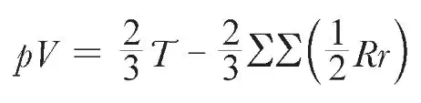
其中，p表示某种流体的压力，V表示盛放流体的容器的体积。由玻意耳定律可知，对于恒温条件下的气体，乘积pV在不同的体积和压力下基本保持不变。可见，方程的左边，是两个直接观测量的乘积。 英文
方程的另一边由两项组成，第一项由微粒的运动决定，第二项由微粒间的相互作用力决定。 英文
T这个量指系统的动能，或者换一种说法，是由于系统各部分的运动而具有的那部分能量。 英文
微粒的动能是其质量与速率平方的乘积的一半，而系统的动能则是其各部分动能的总和。 英文
在第二项中，r表示任意两个微粒之间的距离，R表示它们之间的吸引力。（如果作用力为排斥力或者压力，则R取负值。） 英文
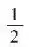
Rr这个量，即引力与彼此吸引的微粒之间距离的乘积的一半，克劳修斯将其定义为引力的位力。（对于压力和排斥力，位力取负值。） 英文
克劳修斯首次指出了这一物理量的重要性。通过给这一物理量指定名字，克劳修斯大大推动了他的方法在物理解释中的应用。 英文
系统的位力是系统中每一对微粒之间位力的总和，可以表示为双重求和∑∑(
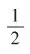
Rr)，意思是要得到每一对微粒之间的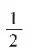
Rr值，并将结果累加起来。 英文
克劳修斯通过简单的数学过程建立了这一方程，这里我不需要以此来烦扰各位，因为今晚我们不是在研究数学问题。不过我们还是可以看到，方程指出有两个因素可能会影响流体对容纳它的容器的压力：流体中微粒的运动倾向于增大压力，而微粒间的吸引力倾向于减小压力。 英文
由此，我们可以将流体的压力归结为流体中微粒的运动或者微粒间的排斥力。 英文
让我们用克劳修斯的结果来验证一下下面的理论：气体压力完全源于一个微粒施加在另一个微粒上的排斥力，而就恒容容器中的气体而言，这些微粒是真正静止的。 英文
在上述情况中，位力必定为负值，又由玻意耳定律可知压力与体积的乘积为常数，则等量恒温的气体，不论其体积是多少，位力也一定是常数。由此可知，两个微粒之间的排斥力与距离的乘积Rr必为常数，换言之，排斥力必定与距离成反比。然而，牛顿已经指出这一定律不适用于分子间作用力的情况，因为它将使物体中相隔较远的部分间的相互作用比相邻的部分间的相互作用更强。实际上，我们只需注意到，如果Rr是常数，那么每一对微粒的位力都一定是相同的，于是系统的位力一定会正比于系统中微粒的对数——即正比于微粒数的平方，或者说正比于容器中气体数量的平方。根据这一定律，相同密度的气体在不同容器中的压力也是不同的，在较大容器中的压力会比在较小容器中的压力更大，而在开放的大气中的压力比在任何普通容器中的压力都大。 英文
因此，气体的压力无法通过假定微粒间存在排斥力进行解释。 英文
这样一来，气体的压力就一定是完全地或部分地依赖于微粒的运动。 英文
如果我们假定微粒间没有任何相互作用，那么就没有位力存在，方程可简化为如下形式：
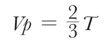
如果用M表示气体的总质量，c2表示微粒速率的均方，我们就可以将方程写作——
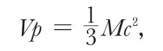
或者用文字表述为，体积与压力的乘积是质量与速率均方乘积的1/3。现在我们先假设，速率的均方仅取决于温度，那么这个方程恰好就是玻意耳定律，后面我们将通过独立的过程来证明。 英文
但是我们知道大部分常见气体都会偏离玻意耳定律，尤其是在低温和高密度的状态下。现在我们再来看看刚才在作为产生气体压力的唯一原因被提出时，已经被我们否定的微粒间存在作用力的假说，在作为偏离玻意耳定律的原因时是否会与实验不一致。 英文
当气体处于极稀薄的状态时，在任一微粒周围给定距离之内的微粒数量将正比于气体密度。因此，一个微粒作用于其他微粒而产生的位力将随密度变化，单位体积内的总位力将随密度的平方变化。 英文
设密度为 ，将方程两边同除以V，我们得到——
，将方程两边同除以V，我们得到——
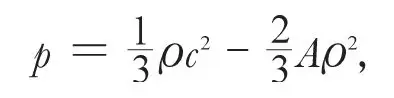
其中A这个量在密度很小时近似为常数。 英文
勒尼奥的实验表明，大多数气体在密度增大时，其压力会下降到低于玻意耳定律的计算值。因此位力必定是正的；也就是说，微粒间的相互作用必定以引力为主，而且这种作用减小压力的效果在开始的时候一定是近似与密度的平方有关。 英文
另一方面，当压力继续增大，物质最终将达到另一种状态，即压力急剧增大但密度只有很小的增加。这表明此时位力为负值，或者换句话说，此时微粒间的相互作用主要为斥力。我们可以由此确定，在任何可感知的尺度中，两个微粒之间的相互作用都是十分微弱的。随着微粒彼此靠近，它们之间的相互作用首先表现为引力，引力达到最大值后开始减小，最终转变为极大的斥力，以至于没有任何可获得的力能够将微粒间的距离减小到零。 英文
源于微粒间这种相互作用的压力与密度之间的关系就是这样的。 英文
随着密度从零开始逐渐增大，一开始压力几乎完全取决于微粒的运动，因此几乎与玻意耳定律计算得到的压力精确地吻合。随着密度继续增加，微粒间相互吸引力的影响逐渐体现出来，这使得压力的增大小于根据玻意耳定律预计的值。如果温度很低，吸引力的影响会大到可以与运动的影响相抗衡的程度，那么压力就不再总是随着密度的增加而增大，而是在达到一个最大值后开始减小。 英文
最终，随着微粒的平均距离继续减小，斥力的影响将胜过引力的影响，而压力将会增大到超出玻意耳定律所预计的值，而且此时很小的密度增加也会导致压力的急剧增大。 英文
由此，压力与体积之间的关系可以用曲线A B C D E F G来表示，其中横坐标代表体积，纵坐标代表压力。 英文
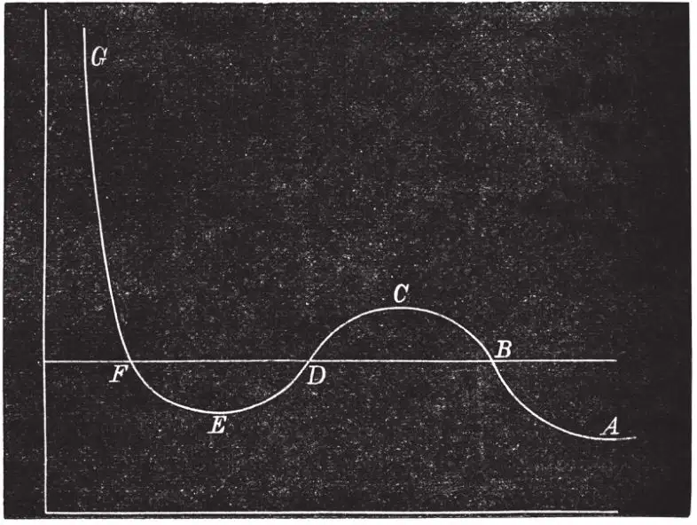
图1 英文
随着体积缩小，压力先增大到C点，然后减小到E点，最终将随体积缩小而无限增大。 英文
到目前为止，我们始终假设在实验过程中介质的每一部分都具有相同的密度。不过，这在实际中是不可能的，我们能够从外部施加于介质的唯一限制，仅仅是确保整个介质都置于确定的容器之中。因此，如果介质有可能自身调整为各处密度不同，我们也无法阻止。 英文
B点和F点代表介质的两种状态，其压力相同但密度相差甚远。全部介质可从状态B到达状态F，不经过中间状态C D E，而是直接由状态B一点一点地转化为状态F。这样，整个介质的连续变化状态对应于图中直线B F上的点，B点代表介质完全处于稀薄状态，F则代表介质完全处于凝聚状态。这就是气体或者蒸气在液化过程中发生的现象。 英文
因此，一般情况下，恒定温度时压力与体积的关系对应于图中的折线A B F G。不过，如果在液化过程中小心地避免介质与蒸气接触，就可能可以使介质保持在液态，并达到图中E点和F点之间的曲线部分所代表的状态。也有可能可以设计出某种阻止蒸气凝聚的方法从而达到曲线B C上的点所代表的状态。 英文
假设的曲线中从C点到E点的部分代表本质上不稳定的状态，因此是无法实现的。 英文
现在，让我们设想介质始终以均匀的状态沿着假设的曲线B C D E F从B变化到F，并以蒸气和液体混合的形式沿着直线F B返回。因为温度一直是恒定的，所以其间不会有热能转化为功，而转化为功的热能对应于区域F D E与B C D的面积差。因此，在给定温度下使蒸气压力达到最大的条件，就是直线B F与上方和下方曲线围成的面积相等。 英文
温度越高，由运动决定的那部分压力与由微粒间作用力决定的部分相比就越大。因此，随着温度升高，曲线的凹陷变得不明显，当温度达到某一个值时，曲线不再凹陷而在某一点达到水平线的位置之后曲线就像前面那样上升了。这个点称为临界点。安德鲁斯已经用巧妙的研究方法确定了碳酸的临界点。临界点对应于确定的温度、压力和密度。 英文
在更高的温度下，曲线始终是向上倾斜的，在从最稀薄到最稠密的状态变化过程中不发生液化。 英文
关于液态与气态连续性的分子理论构成了一篇极具才华的论文的主题，论文的作者是莱顿大学的毕业生约翰内斯·迪德里克·范德瓦尔斯先生†。尽管我觉得他在某些地方犯了一些数学错误，而且他的最终结果也确实不是对真实分子间相互作用的完整表达，但是他对这一难题所作的努力表现了他非凡的才华和勇气，以至于他的工作不可能不对分子科学产生重要的推动作用。确实有不止一位研究者受此驱使而去学习这篇文章撰写时所用的荷兰语。 英文
物质不同状态间纯粹的热力学联系不属于我们的主题，因为它与这些关于分子的具体理论无关。不过，我决不能忘记提及一项极为重要的，由美国耶鲁大学的威拉德·吉布斯教授作出的热力学方面的贡献‡，他利用一个模型给我们提供了一种极其简单又十分令人满意的表示不同物态间关联的方法。借助这个模型，那些长期以来阻碍我本人和其他人努力的难题可能立刻就会迎刃而解。 英文
II
现在让我们回过头来看看极稀薄状态的气体，在这种状态下压力完全来源于气体微粒的运动。由于体积、压力和质量都是可观测量，因此很容易利用克劳修斯方程计算出微粒速率的均方。假设每种微粒具有相同的速率，则在0℃时，氧分子的速率为每秒461米，氮分子为每秒492米，而氢分子为每秒1,844米。 英文
已经有多位学者多次提出过用气体微粒对容器表面的撞击来解释气体对容器的压力。不过，我们一直不能解释为什么从未观测到气体以接近于上面所提到的速率散布到大气中的现象，直到克劳修斯通过对大量微粒的运动的全面研究发展了现代分子科学的方法和观念。 英文
我们得益于他提出的一个概念，即一个气体分子在与其他分子相继发生两次碰撞之间所经过路程的平均长度。一旦看到每个气体分子是如何在经历了一段极短的路程后与另一个分子相撞，随后气体分子又沿着完全不同的方向开始新的旅程，那么很明显的就是：气体扩散的速率不仅依赖于分子的速度，还与分子在相继发生的碰撞之间途经的距离有关。 英文
关于克劳修斯对分子科学的特殊贡献，我还有很多要说。最主要的是，他通过展示如何用数学方式处理含无数分子的运动系统从而开创了数学物理的新领域。 英文
至少在早期的研究中，克劳修斯并没有试图去确定同一气体中的所有分子是否都具有相同的速率，或者如果它们的速率不等，其分布是否应遵循某种规律。他的第一个假说似乎假定所有分子的速率都是相等的。不过显而易见的是，如果碰撞发生在大量分子之间，那么即使它们的速率开始时是相等的，之后也会变得不相等，因为除了在某些几乎无法满足的条件下，两个碰撞前具有相同速率的分子在碰撞后总会获得不同的速率。通过将分子按其速率分组，我们就只需记录不同组内分子数量的增加或减少，而不必完成跟踪每一个分子的所有碰撞这项不可能完成的任务。 英文
利用这种无论从实验角度还是数学角度来说都是唯一可行的方法，我们从严格的动力学方法转到了统计和概率的方法上。 英文
当两个分子发生碰撞时，它们就会从原本所在组的一对转变成另一组的一对，而且在同时发生大量碰撞时，平均来看，同一时间段内进入某一个组的分子数量，不会多于或少于离开该组的分子数量。当系统达到这种状态时，分子在各组的分布一定符合某种确定的规律。 英文
我在了解了克劳修斯的研究工作之后，便立即努力探求这一规律。 英文
我在1860年发表的结果后来由路德维希·玻尔兹曼博士进行了更为严格的研究，他还将他的方法应用于对化合物分子运动的研究。数学研究，例如所有关于概率统计的科学部分，虽然有些困难，却不无裨益。从物理角度来说，数学方法的某些推论是非常正确的，似乎可以说明所选假说是正确的，而另一些却与已知的实验结果相违背，这使我们不得不承认，到目前为止，我们遗漏了关于分子碰撞物理理论完整表述中的某些核心部分。 英文
现在我必须努力为各位介绍这方面研究的现状，不过，我们不会涉及其中的数学证明。 英文
我必须从同种分子中速度分布的一般规律开始说起。 英文
如果从图中选择一个固定的点，从这点出发画一条线来表示速度的方向和大小，并在线段末端画出端点，那么端点的位置就表示分子的运动状态。 英文
如果我们对所有分子作同样处理，那么整张图上将画满了点，某些位置的点会比其他位置的点多。 英文
可以看出，这些点的分布规律与观测或调节中经常出现的误差的分布规律是相同的。 英文
你面前这张图中的点可以用来表示分子的速度，或者对同一颗恒星位置的不同观测结果，或者位于目标靶心周围的弹洞，上述这些具有相同的分布方式。 英文
分子速率的取值范围是从零到无限大，因此说到分子的平均速率我们必须先定义我们指的是什么。 英文
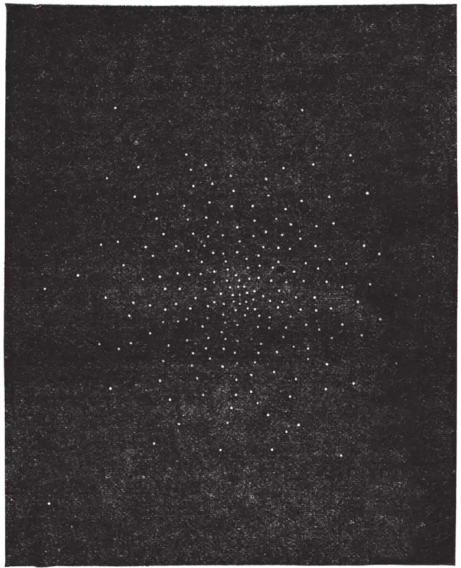
图2．速度图像 英文
为了便于比较和计算，最有用的量叫作“均方速率”。这个量的平方是所有分子速率平方的平均值。 英文
这就是上面给出的利用不同气体性质计算得到的速度。以均方速率运动的分子具有的动能等于介质内全体分子的平均动能，并且若以此速率运动的单个物体的质量等于气体的总质量，那么该物体与气体具有相同的动能，只是前者具有可见的形式并可直接用于做功。 英文
如果同一容器中包含不同种类的分子，其中一些具有比较大的质量，那么根据这项研究，这些分子的速度分布方式应满足每种分子具有相同的平均动能，不管其质量是大还是小。 英文
这里我们用到的可能是动力学方法最重要的应用，即将它应用于化学科学。比如，假定我们将两种气体置于同一容器中。分子运动的最终分布形式应满足两种气体中每一种的单个分子的平均动能相等。正如我们所知，这种最终态也是等温态。由此，两种气体具有相同温度的条件，就是两种气体中单个分子的平均动能相同。 英文
现在，我们已经指出，气体的压力是单位体积动能的2/3。因此，如果两种气体具有相同的压力和温度，那么它们每单位体积的动能以及每个分子的动能也是相同的。由此，两种气体单位体积内必定含有相同数量的分子。 英文
这一结果与盖·吕萨克提出的等容定律是一致的。不过，到目前为止该定律只基于化学证据，不同物质的相对分子质量已经从物质参加化合反应时所占据的比例中推导出来了。现在已经用动力学原理证明了该定律。分子被定义为扰动运动中作为一个整体运动的物体的一小部分。这是一个纯粹的动力学定义，与任何化合实验无关。 英文
在标准的温度和压力下，气态介质的密度正比于该气体按以上定义的一个分子的质量。 英文
这样，我们就有一种可以估计气态时不同物质的相对分子质量的可靠方法。这种方法比那些建立在电解或者比热基础上的方法更可信赖，因为我们已经掌握的关于扰动运动条件方面的知识比关于电解或者分子结构内部运动的知识更完备。 英文
现在我必须谈谈这些分子的内部运动，因为目前气体动力学理论遇到的最大困难就在这部分。 英文
迄今为止我们考虑的只是分子质心的运动。现在我们不得不考虑分子组分相对于质心的运动。 英文
如果我们假定分子是由原子构成的，并且每个原子都是所谓的质点，那么每个原子都可以在3个不同且独立的方向上运动，这对应于空间的3个维度，因此要确定分子中所有原子结构和位置所需的变量数就是原子个数的3倍。 英文
不过，对数学研究来说，假定分子是由原子构成的并不是一个基本假设。全部的前提假设只是，分子的位置和结构可以用一定数量的变量完整地表达。 英文
让我们将这个数设为n。 英文
在这些变量中，有3个是用来确定分子质心位置的，而其余n–3个则用来确定相对于质心的分子结构。 英文
n个变量的每一个都对应于一种不同的运动。 英文
质心的平移运动有3个分量。 英文
各部分相对于质心的运动则包含n–3个分量。 英文
分子的动能可以看作是由两部分组成——其中一部分是假定整个分子的质量集中于其质心所产生的，另一部分是各部分相对质心运动所产生的。第一部分称为平动动能，第二部分称为转动和振动动能。上述量的总和就是分子运动的总能量。 英文
正如我们所知，气体的压力只由平动动能决定。比热则依赖于温度升高时动能与势能的总增加量与温度增量的比值。 英文
克劳修斯早就指出，如果我们能够通过实验获得恒压比热与恒容比热的比值，就能确定总能量增量与平动动能增量的比值。 英文
但是，他并没有试图先验性地确定两部分能量的比值，尽管他提出了一个极有可能成立的假说：对于一种给定的物质，两部分能量的平均值总是具有相同的比值。他将这一比值的具体数值留待实验确定。 英文
1860年，我基于分子是不变形的弹性体的假说研究了两部分能量的比值。我惊讶地发现，不论分子是何种形状，只要它们不是绝对光滑和完美球状，那么两部分能量的比值就一定总是相同的，实际上这两部分能量是相等的。 英文
这一结果被玻尔兹曼的研究工作所证实，他给出了具有n个变量的分子在一般情况下的结果。 英文
他发现，相同温度下任何种类的分子都具有相同的平均平动动能，运动的总能量与平动动能之比为n∶3。 英文
对于刚体来说n = 6，这使得运动的总能量为平动动能的2倍。 英文
但是，如果分子能够在外力作用下改变形状，它就一定可以储存势能，而如果外力是能保证分子的稳定性的那种，当内部运动的平均能量增加时，平均势能也会增加。 英文
因此，随着温度升高，平动动能、内部运动能量和势能的增量分别为3，（n–3）和e，其中e是取值为正的未知量，其数值取决于将分子各组成部分束缚在一起的力的定律。 英文
当物体的体积保持不变时，加热的效果是增加总能量。我们由此给出恒容气体的比热——
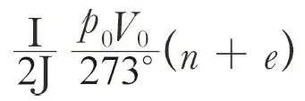
其中p0和V0是零摄氏度或绝对温度273˚时单位质量的压力和体积，而J则是热的动力学当量。恒压条件下的比热为
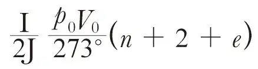
对于那些有相同复杂程度的分子，n值是相同的，e值可能是相同的。 英文
如果情况就是如此，那么根据杜隆–珀蒂定律，比热与比重成反比，这是一条在一定精度范围内已经被实验证明了的定律。 英文
但是，如果我们采用勒尼奥所发现的实际比热值并将其与此公式进行比较就会发现，对空气和其他几种气体，n + e的值不会超过4.9。而对碳酸和水蒸气来说这个值则大一些。如果将计算所得的比热之比值
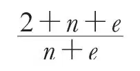
与实验确定的比值相比，我们得到相同的结果，即1.408。 英文
此时，我们将面临分子理论中最大的困难，也就是，如何解释等式n + e＝4.9。 英文
如果我们假设分子是不可分割的质点——没有转动能量或者内部运动——那么n为3而e为0，比热的比值是1.66，而这个值对于任何实际气体来说都太大了。 英文
但是，通过光谱仪我们了解到，分子可以进行周期固定的振动。因此分子不可能只是一个质点，而应是一个结构可以改变的体系。这一体系的变量不可能少于6个。这使得比热比值的最大值是1.33，而这个结果对于氢气、氧气、氮气、碳氧化物、氮氧化物和氢氯酸来说都太小了。 英文
但是光谱仪告诉我们某些分子可以进行多种不同类型的振动。因此它们必然是具有相当复杂程度的体系，具有的变量数远大于6。那么，每增加一个变量，都会在不影响外部压力的前提下引入一些附加的内部运动的能力。因此，不论是在恒压还是恒容条件下计算，每增加一个变量都会使比热增加。 英文
分子以势能形式储存能量的能力也是如此。但是，当我们假定分子仅由两个原子组成，计算得到的比热值就已经太大了。于是，分子的复杂程度每增加一点，都只会加大使比热的观测值与计算值相一致的难度。 英文
现在我已将我认为的分子理论遇到的最大困难呈现在各位面前。玻尔兹曼曾经建议，应该从分子与围绕在其周围的以太介质的相互作用中寻求解释。不过，要是我们借助于这种介质的话，恐怕只会使已经过大的比热计算值变得更大。 英文
玻尔兹曼定理不仅可以用于确定分子的速度分布，还可以用于确定在外力作用下分子自身在一个区域中的分布。它告诉我们，在分子势能为ψ的一点，分子的分布密度正比于
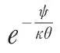
，其中θ为绝对温度，而 对于所有气体都是常数。由此可知，如果同一容器中的几种气体受到外力（例如重力）作用，每一种气体的分布与没有其他气体存在时是一样的。这一结果与道尔顿提出的定律是一致的，根据这个定律，大气可以被视为是由两种独立的气体组成，一种为氧气，另一种为氮气；随着海拔升高，氧气的浓度比氮气的浓度减小得更快些。 英文
对于所有气体都是常数。由此可知，如果同一容器中的几种气体受到外力（例如重力）作用，每一种气体的分布与没有其他气体存在时是一样的。这一结果与道尔顿提出的定律是一致的，根据这个定律，大气可以被视为是由两种独立的气体组成，一种为氧气，另一种为氮气；随着海拔升高，氧气的浓度比氮气的浓度减小得更快些。 英文
以上是大气丝毫不受扰动的情况，而风的影响会将大气混匀，使其组成比保持静止时更均匀。 英文
玻尔兹曼定理的另一推论是，静止状态的气体在垂直方向上温度趋于一致。 英文
对于大气来说，风的影响导致温度变化，例如，若一定质量的气体垂直向上运动，那么它在上升过程中会膨胀并会冷却。 英文
然而，除了给出这些我已经于1866年就以不那么精巧的方法获得并发表的结果之外，玻尔兹曼的定理似乎还开辟了一条通向更纯粹的化学领域的道路。因为，如果气体是由大量相似的系统构成，每一个系统都可以假定为具有不同能量的不同状态，定理告诉我们每一状态中系统的数量正比于
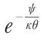
，其中ψ表示能量，θ表示绝对温度，而是一个常数。 英文
容易看出，这一结果应当被用于发生在不同物质混合体中的组合的状态理论。不过，由于这项工作是我这个星期才刚刚开始的，我还不想以我粗糙的计算结果来搅扰诸位。 英文
我一直将论题限制在分子研究领域的一个很小的范围内。我并没有提及关于物质扩散、运动以及能量的分子理论，因为，尽管这些结果，尤其是关于物质扩散和液体蒸发的结果，对很多化学家来说极有吸引力，并且从这些结果中我们可以推导出重要的分子数据，但这些数据依赖于两个分子碰撞的条件，因而属于我们研究工作中必然具有很多假设性的部分。我认为，还是展示一下能表明流体各部分运动的证据，并且描述一下此运动在不同质量的分子中的分布情况更好些。 英文
为表明同种物质的所有分子都具有相同的质量，我们就要谈到格雷姆引入的透析法，用这种方法可以通过一个多孔塞进行过滤，将两种不同密度的气体分离。 英文
如果在一种气体中存在不同质量的分子，将同样的透析过程足够多次地重复之后，我们就可以得到两部分气体，其中一部分的平均分子质量比另一部分的大。这两部分气体有不同的密度和化合量。现在，也许可以说，没有谁曾以足够精细的方式对每一种化学物质进行过这一实验。然而自然过程在持续不断地进行着这种类型的实验。如果同种物质具有十分相似但质量略有差别的分子，那么其中质量较大的分子将会被优先选择来形成一种化合物，而质量较小的分子则形成另一种。但是，无论是从水中还是从碳氢化合物中得到的氢都具有相同的密度，因此，氧和碳都不能在氢分子中找到大于或小于平均质量的个体。 英文
目前已有的对分子实际大小的估计都建立在将物体固态或液态时的体积与气态时的体积相比较的基础之上。在对分子体积的研究中我们遇到了很多困难，但同时也得到了很多可靠的结果，这使研究充满了希望。 英文
对于分子可能的振动，相关理论的研究尚未开始，它本应在不断将动力学理论与光谱证据相比较的帮助下展开。用光谱工具和计算法武装起来的才智之士，一定会发现一些与分子内部结构有关的重要事实。 英文
观测到的气体的透明度看来似乎很难与分子研究的结果一致。 英文
一种认为气体是由间隔距离与其自身直径符合适当比例的分散小球组成的气体分子模型，只能允许极少量的光穿透100英尺的距离。 英文
不过，要是我们还记得与光的波长相比分子的尺寸很微小，我们就会采用瑞利勋爵关于波与微小球体间相互作用的某些理论研究。他的研究表明，气体的透明度如果只受分子存在的影响，就会比我们有任何理由能够去相信的还要大得多。 英文
一项几乎还没有人尝试过的更加困难的研究，是与气体的电学性质有关。还没有人能够解释为什么稠密的气体是非常良好的绝缘体，为什么气体在稀释或加热时可以放电，而完全的真空却是最好的绝缘体。 英文
的确，稀薄气体中的分子扩散会进行得更快一些，因为分子运动的平均路程反比于密度。但是稠密气体与稀薄气体的电学差异似乎非常大以至于无法从这个角度来解释。 英文
虽然我认为指出这种分子理论目前尚无法克服的困难是应该的，但我绝对不会忘记提醒诸位它已经令人满意地解释了大量问题。我们已经提到过气体定律，正如我们所说，它表达了气体的体积、压力与温度之间的关系，以及盖·吕萨克的极其重要的等容定律。可以认为关于这些定律的解释是完整的。分子比热定律已被实验相对粗略地验证了，而对它的完整解释则有赖于拥有比今天更完备的关于分子内部结构的知识。 英文
不过，由这些探索得到的最重要的结果是关于热现象更加明确的概念。首先，介质的温度由介质中单个分子的平均平动动能来度量。在两种介质有热交换时，以此确定的温度有变得一致的倾向。 英文
其次，我们知道了如何将所谓的热运动与其他类型的运动区分开。我们所谓的热运动的特性是完全无规则；也就是说，在任一给定时刻，一个分子的速度的方向和大小不可能用时间和现在分子所处的位置表示。 英文
另一方面，在物体的可视运动中，物体的任一可视部分所含全部分子的质心速度，就是所观测到的该部分的速度。不过，分子也可能由于被加热而具有不规则的扰动。 英文
同样地，在声音的传播过程中，物体不同部分的运动通常由于过于细微和过于快速变化而难以被直接观测。不过，在产生声音这一物理现象的运动过程中，介质中每一部分在任意时刻的速度都可以用位置和所经过的时间表示出来；因此在声波传播过程中介质的运动是规则的，必然不同于我们所说的热运动。 英文
然而，如果声波不是以整齐有序的方式向前传播并使其所经之处的介质归于静止，而是遇到阻力从而将运动耗损在无规则的激发中，这种无规则的分子运动就无法再以声音的形式在一个方向上快速地传播，而只能以热的形式留在介质中，直到通过缓慢的传导过程流向介质较冷的部分。 英文
被我们称为光的那种运动，尽管比声音运动更加细微和快速变化，但也和声音一样是非常规则的运动，因此不是热运动。以前被称为热辐射的物理现象在物理本质上与光是一样的。 英文
辐射在到达介质的某一部分后，就会进入并穿过该部分，再从另一端出现。该部分介质在传导辐射时处于一种特定的运动状态，而一旦辐射穿过该部分介质，该部分介质便会回到先前的状态，而运动完全转移到了介质中新的部分。 英文
现在，我们称为热的这种运动，不会自发地从一个物体进入另一个物体，除非在整个传导过程中，第一个物体总是比第二个物体的温度高一些。因此，从介质的一部分完全流出再进入另一部分的辐射运动，就不适宜被称作热了。 英文
我们可以用气体分子理论去检验那些假定光以太是由原子或分子组成的假说。 英文
那些敢于描绘光以太组成的人们也曾假定它是由原子或分子组成的。 英文
将分子理论应用于这类假说会导致相当令人惊讶的结果。 英文
首先，以太分子只会是气体本身。如果我们愿意的话，我们可以假定每个以太分子都是一个氢分子的千分之一或百万分之一，并且它们可以自由穿越任何常见分子的间隙。但是，正如我们已经看到的，普通分子的扰动与以太分子的扰动之间会自发地建立平衡。换句话说，以太与其中的物体会趋于温度相同的状态，那么以太就会服从诸如压力和温度等常见的气体定律。 英文
以太除了具有气体的性质以外，根据杜隆和珀蒂建立的定律，相同压力下，单位体积以太的热容与单位体积任何普通气体的热容相等。因此，在比热实验中不可能检测不到以太的存在，从而我们可以断言以太不是由分子构成的。 英文
（王耀杨 翻译；李芝芬 审稿）
* 2月18日，克拉克·麦克斯韦教授（皇家学会会员）在化学学会所作的讲座。
† 《论液态和气态的连续性》，莱登赛特霍夫出版社，1873年。
‡ 《借助曲面表示物质热力学性质的几何描述法》，《康涅狄格艺术与科学学会学报》，第2卷，第2部分。